Pushing questionnaires to Pavlovia#
For the AND lab
If you haven’t used Gitlab or Github before, you are basically cloning an empty folder (that you created for your project) from the server to your local device, adding files/making changes to this folder, and sending things back to the server.
1. After creating your Pavlovia account, go to Gitlab Pavlovia: Pavlovia Github#
2. Click “new project” on the right corner and then “create blank project”#
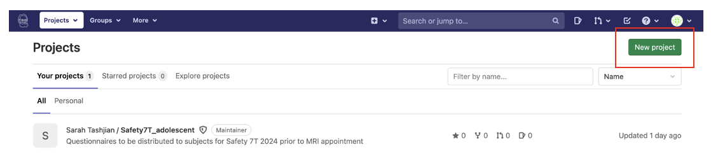
*** Either credits or a license are necessary to run your experiment. If you need to use Sarah’s license, please ask her for her account details and create a new project using her account. ***
You should have something like this: 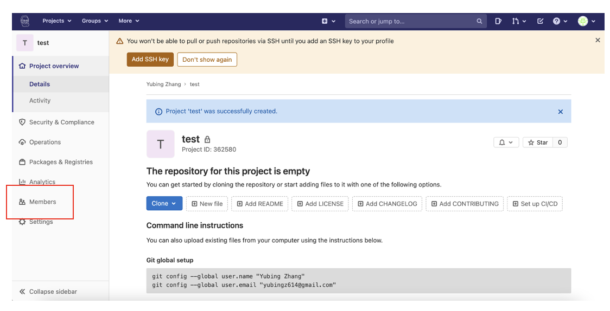
*** If you used Sarah’s account to create the new project and would like to run it later using your own account, you can share the project with yourself (“Members”). ***
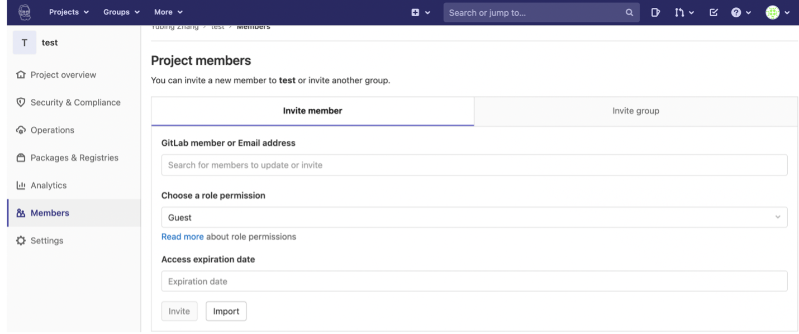
3. Install Gitlab on your local device: https://git-scm.com/downloads#
4. Click clone on the right corner and copy the link (“clone with HTTPS”)#
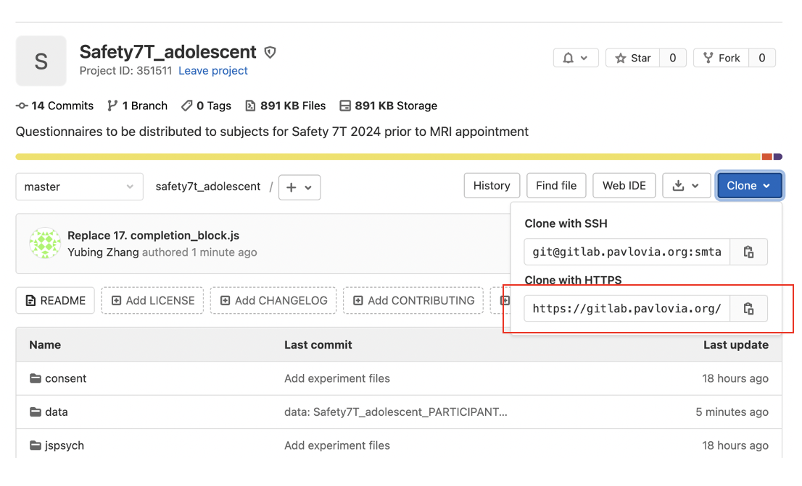
5. In terminal, go to the directory where you w ould like the project folder to be cloned (e.g., cd desktop):#
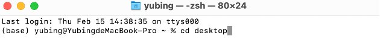
6. Enter “git clone” + link.#
7. Add files#
There should be a new folder created on your laptop (the name of the folder should be the same as your project name, e.g., “safety7t_adolescent”). Copy and paste all relevant files into this folder:
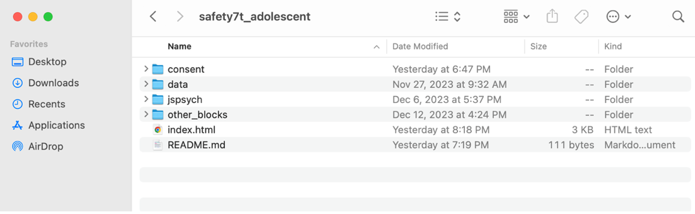
8. In terminal, enter the following codes:#
cd YOUR_FOLDER_NAME # Direct yourself to the cloned folder
git add . # Add all files
git commit -m "Add experiment files" # Commit with comments
git push origin master # Upload everything commited to the server
Cell In[1], line 1
cd YOUR_FOLDER_NAME # Direct yourself to the cloned folder
^
SyntaxError: invalid syntax
Important
If it asks for a password, it’s likely to the one for your local device (not sure if this step is gonna be the same for everyone…)
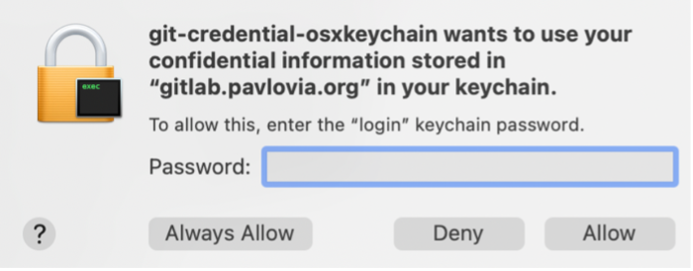
You should then be able to see the files on the Gitlab webpage:
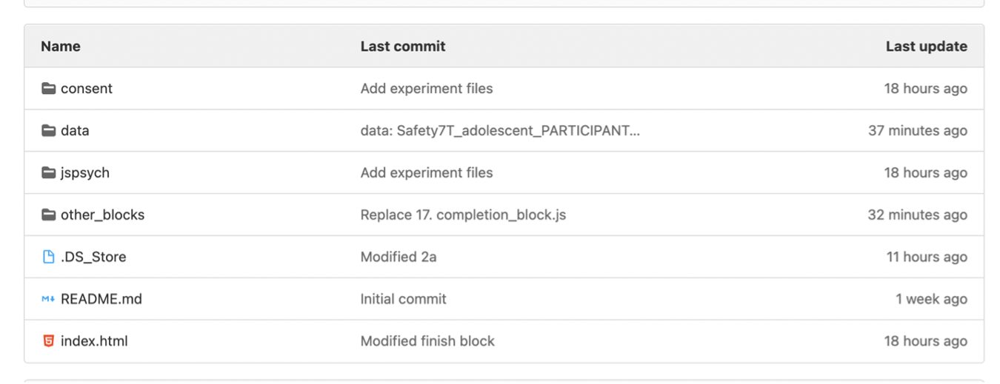
9. Making changes#
git pull # Pull latest files
git status # Check what have been changed locally
git add . # Add all modified files
git commit -m "xxx modified" # Commit with comments
git push origin master # Upload everything to the server
Important
Make sure that you’ve download the latest version from the server, especically when you are not the only one working on the project.
OR
Go to the webpage, edit it directly or replace it by uploading a new file
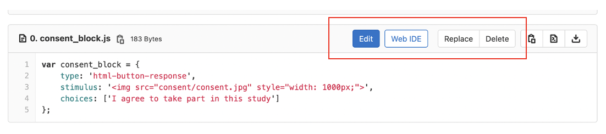
10. You should also be able to see your project on Pavlovia (“dashboard” -> “experiments”):#
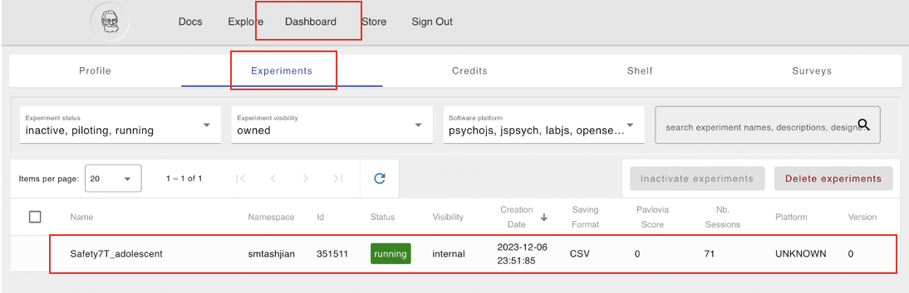
Note
You can now pilot or run your experiment!
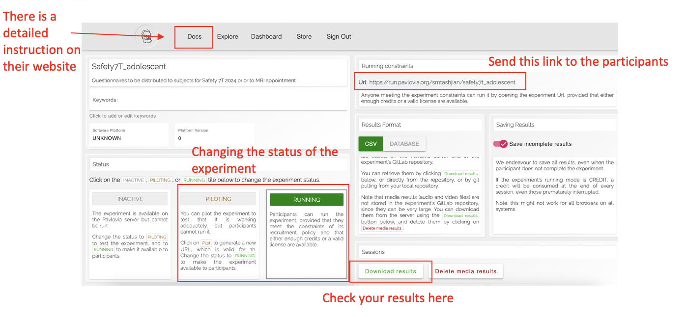